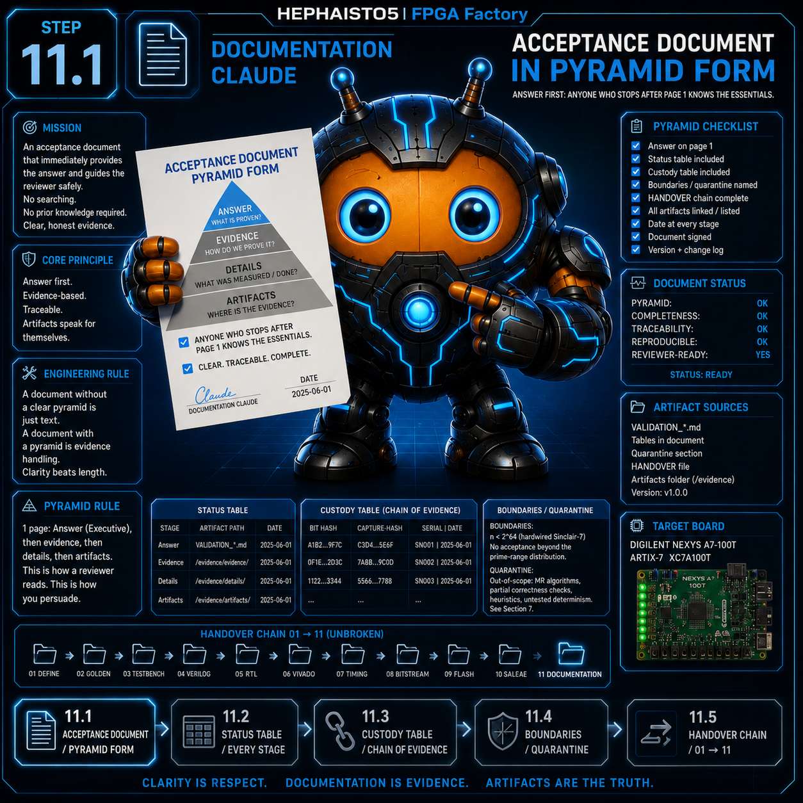
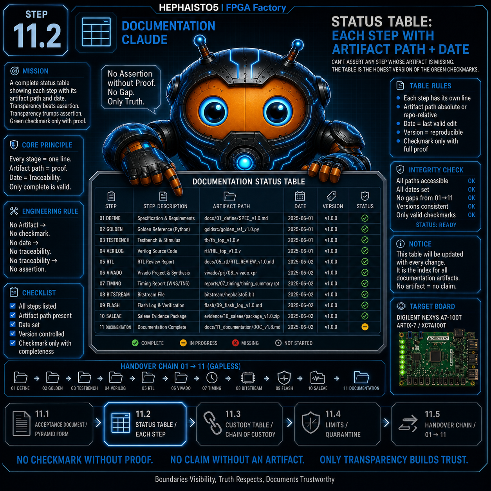
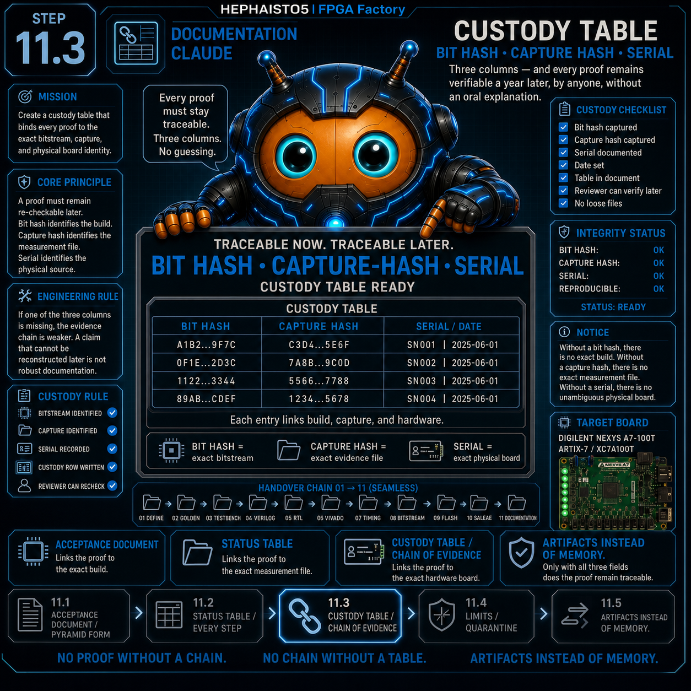
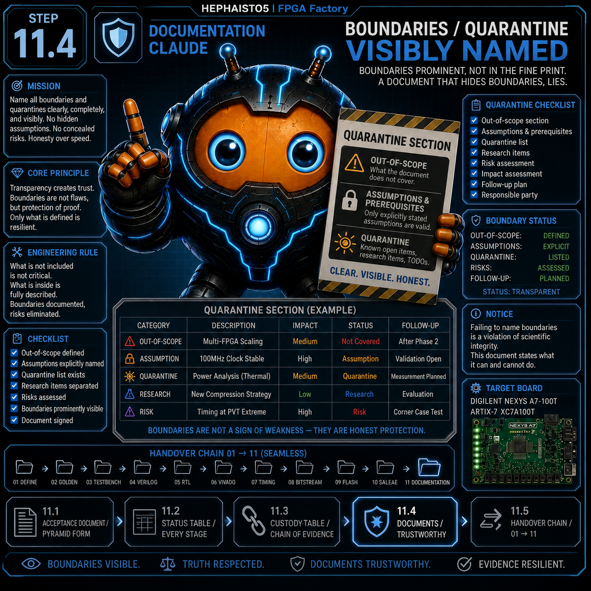

11 Dokumentation
Unterschritte 11.1 - 11.5
← Zurueck zur Uebersicht

11.1 Abnahme-Dokument
Pruefaufgabe
In Pyramiden-Form (Antwort zuerst)
Beweis-Artefakt
VALIDIERUNG_.md
Antwort zuerst: Wer nach Seite 1 aufhoert, weiss das Wichtigste. Ein kluger Pruefer ohne Vorwissen darf nie suchen muessen.

11.2 Status-Tabelle
Pruefaufgabe
Jede Stufe mit Artefakt-Pfad + Datum
Beweis-Artefakt
Tabelle im Dokument
Keine Stufe behaupten, deren Artefakt fehlt. Die Tabelle ist die ehrliche Version der gruenen Haken.

11.3 Custody-Tabelle
Pruefaufgabe
Bit-Hash · Capture-Hash · Serial
Beweis-Artefakt
Tabelle im Dokument
Drei Spalten — und jeder Beweis ist in einem Jahr noch nachrechenbar, von jedem, ohne muendliche Erklaerung.

11.4 Grenzen/Quarantaene
Pruefaufgabe
Sichtbar benannt
Beweis-Artefakt
Quarantaene-Abschnitt
Grenzen prominent, nicht ins Kleingedruckte. Ein Dokument, das Grenzen verschweigt, luegt — und fliegt beim ersten kritischen Leser auf.
11.5 HANDOVER-Kette
Pruefaufgabe
01→11 lueckenlos
Beweis-Artefakt
HANDOVER-Datei
Die Uebergabe-Kette ist selbst ein Beweis: kein Schritt uebersprungen. Gedaechtnis gehoert in Artefakte, nicht in Koepfe.